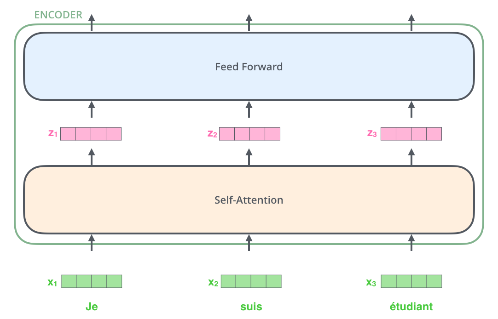

图解Transformer
前言
虽然市面上已有一些解释Transformer的文章，但都有其缺陷，比如：有些文章过多地使用复杂的公式和术语，让非专业读者难以理解；有些文章缺乏直观的图解，难以形象地展示概念。我希望我可以通过最简明、最生动和最通俗的语言，辅以图片，使得每个人，哪怕只是高中生，都能轻松理解这个复杂的概念。
Transformer是什么
首先，我们要澄清3个概念：机器学习，深度学习和Transformer。
机器学习就像是教计算机如何做事情的一种方式，就像教小孩子学习一样。我们给计算机看很多例子（数据），告诉它怎么做某件事情。计算机通过这些例子学习，找出规律，然后可以自己做出预测或者执行任务，就像小孩学会了做一些事情一样。例如，你可以给他100张照片，其中猫和狗各占一半。给他看每张照片的时候，你告诉他“这是猫”或“这是狗”。在这个过程中，他就具备了辨认猫狗的能力。这时，你拿出第101张照片————他从未见过的照片，但是他也可以辨认出来这是猫还是狗。
而深度学习是机器学习的一种特定类型，它使用称为神经网络的结构来学习和理解数据。这些神经网络由许多层组成，每一层都对数据的不同特征进行处理，从而使得系统能够进行更复杂和精确的预测或决策。
Transformer则是一种特殊类型的深度学习模型，它在自然语言处理和其他领域中取得了巨大成功。它通过注意力机制（attention mechanism）来处理输入数据，能够更好地理解长距离的依赖关系，从而在许多任务中表现出色。Transformer的创新在于其能够并行处理输入数据，使其在处理大规模数据时非常高效。
Transformer可以干什么
Transformer最初是一种用于机器翻译的深度学习模型，由Google的研究团队在2017年通过Attention Is All You Need这篇论文提出。如今，Transformer已经渗透到我们生活的方方面面。例如，当你与ChatGPT、Kimi、文心一言等大语言模型进行对话时；当你使用翻译工具进行语言翻译时；当你使用图/文/视频信息流软件，发现平台能精准推送你喜欢的内容时...
甚至，Transformer还可以用在生物学领域，如AlphaFold2，它结合了Transformer模型，显著提高了蛋白质结构预测的准确性。这有助于药物开发和疾病研究，促进人类福祉。总之，Transformer是一个强大的深度学习算模型，已经在我们日常生活的各个方面得到了广泛应用。
Transformer总体上的认识
接下来，我会图文并茂地用通俗易懂的语言解释这个模型，使得每个人都能轻松理解这个复杂的概念。
Transformer最初用在机器翻译领域，所以这里我会用Transformer在机器翻译领域的具体应用来举例。Transformer的核心在其他领域的应用和在机器翻译领域的应用大同小异。传统的机器翻译通常依赖于RNN或LSTM，Transformer通过引入自注意力机制显著提高了翻译质量(所以Transformer论文的标题是：Attention Is All You Need)。事实上，谷歌翻译自从引入Transformer模型后，翻译准确性得到了大幅提升。
现在我们将Transformer拆解开来看看它是如何工作的。
我们假设Transformer这个模型是一个黑箱，在机器翻译任务中，这个黑箱接收一种语言的句子作为输入，然后将其翻译成其他语言进行输出。

当我们打开这个黑箱，我们会发现，黑箱内是由编码组件（下图绿色部分）、解码组件（下图粉色部分）和它们之间的连接（下图黑色箭头）组成。

编码组件和解码组件，分别由六层编码器和六层解码器首尾相连堆砌而成。这个数字6没有什么特殊的含义，你也可以尝试其他的数字。

在代码中，编码器和解码器的数量往往由`num_layers`的值控制。例如，当你的这行代码是`num_layers = 3`时，那么你的编码组件和解码组件就是分别由三层编码器和三层解码器首尾相连堆砌而成的。就是这么直观和简单。
每个编码器的结构完全相同，可以拆解成以下两个子部分：

编码器（上图中的整个的绿色方框）会接收一个输入，这个输入首先会经过一个self-attention层。这层帮助编码器在编码特定单词时查看输入句子中的其他单词。这是Transformer的一个很主要的部分。后面，我们会详细了解self-attention的内部结构。
self-attention层的输出流向feed-forward neural network（上图中蓝色部分），也就是前馈神经网络。
解码器同样也有这两个子层，但是在两个子层间增加了attention层，该层有助于解码器能够关注到输入句子的相关部分。

总结：这个黑箱是由编码组件和解码组件组成的，每个编码组件和解码组件都含有6层的编码器和解码器。每层编码器，都含有sefl-attention层和feed-forward neural network层。在机器翻译的实际应用中，输入的单词就是流经这些层，然后变成单词对应的输出。如把数学翻译成Math。
将张量带入视野
现在我们已经了解了模型的主要组件，接下来我们来看看各种张量如何在这些组件之间流动。在深度学习领域，向量是一个包含多个数值的数组。一个长度为30的向量（也就是30维向量）可以表示为[n1, n2, ... ,n30]。如果这个向量代表一个班级的30名同学的线性代数成绩，这个向量可以是[89, 97,75, ... 88]。
至于向量和张量的关系，一句话解释就是：向量是一维的张量，也就是张量是向量的推广。例如，一个一维张量就是一个向量，一个二维张量就是一个矩阵。张量的维度可以是任意的，常见的包括一维（向量）、二维（矩阵）和三维、四维等高维张量。高维张量在深度学习模型中经常使用，比如在图像处理中的四维张量，包含批次大小、高度、宽度和通道数。
首先，我们使用词嵌入算法，把词语转化为固定维度的向量。最简单的理解可以是：通过词嵌入算法，把一个单词转换成一堆数字，随后，单词的变化就变成了数字的变化。简单来说，这是因为计算机无法直接理解自然语言中的单词，但可以处理数值。通过将单词转换成向量，计算机可以将文本数据转化为数值数据，从而能够进行处理和计算。同时，词嵌入可以捕捉到单词之间的语义关系。比如，通过词嵌入，语义相似的单词会被映射到相近的向量空间。这意味着“高等数学”和“线性代数”会有相似的向量表示，而“高等数学”和“猫咪”则会有较大的向量差异。

还记得吗，一个编码组件共有6层编码器，词嵌入只发生在最底层的编码器中。所有编码器的共同特点是它们接收一个大小为512的向量列表——在底层编码器中，这是词嵌入，而在其他编码器中，这是之前的编码器的输出。这个列表的大小是我们可以设置的超参数——基本上，它将是我们训练数据集中最长句子的长度。
在把每一个单词通过词嵌入算法转换后，它们每一个都会通过编码器的那两个层（自注意力层和前馈神经网络层，也就是self-attention层和feed-forward neural network层）。
自注意力层（Self-Attention层）
接下来，我们将切换到一个更短的句子，看看在编码器的每个子层中发生了什么。
如前所述，编码器接收一个向量列表作为输入。它通过将这些向量传递到“自注意力”层，然后传递到前馈神经网络中进行处理，然后将输出向上发送到下一个编码器。

假设以下句子是我们想翻译的输入句子:
”The animal didn't cross the street because it was too tired”（“那只动物没有穿过马路，因为它太累了。”）
这个句子中的“它”指的是什么？它是指马路还是动物？对人类来说这是一个简单的问题，但对算法来说并不简单。当模型处理“它”这个词时，自注意力允许它将“它”与“动物”关联起来。
当模型处理每个单词（输入序列中的每个位置）时，自注意力允许它查看输入序列中的其他位置（代表其他单词）以寻找有助于更好地编码这个单词的线索。自注意力机制允许模型在处理某个单词时，参考同一个句子中的其他所有单词。这意味着，当模型处理句子中的一个词时，它可以根据上下文确定哪些词与当前词相关，从而更好地理解整个句子的语义。在句子“The animal didn’t cross the street because it was too tired”中，当模型处理“it”这个词时，自注意力机制会让模型关注到“animal”这个词，从而知道“it”指的是“animal”而不是“street”。在长句子中，某些词与很远的词之间存在重要的语义关系。传统的序列模型在处理这些长距离依赖时效果不佳，因为随着距离的增加，信息可能会丢失或衰减。而自注意力机制可以直接计算任何两个词之间的关系，无论它们在句子中的距离多远，从而更好地捕捉到长距离依赖。
如何实现自注意力机制
让我们首先看看如何使用向量来计算自注意力。注意，这部分是Transformer的重点，毕竟论文的名字就叫《Attention is All You Need》。
计算自注意力大概有六个步骤。👉第一步👈是从每个编码器的输入向量（在这种情况下是每个单词的词嵌入向量）中创建三个向量。因此，对于每个单词，我们创建一个查询向量（Query, Q）、一个键向量（Key, K）和一个值向量（Value, V）。这三个向量是通过将嵌入向量乘以在训练过程中训练得到的三个矩阵生成的。这三个矩阵最开始是随机生成的，在模型的训练过程中，矩阵会不断被训练以便于优化这个矩阵的数值。

将x1乘以WQ权重矩阵生成与该单词相关的查询向量q1，依此类推，我们最终为输入句子的每个单词创建了一个查询向量、一个键向量和一个值向量。
计算自注意力的👉第二步👈是计算一个得分。假设我们正在计算示例中第一个单词“Thinking”的自注意力。我们需要计算这个单词（Thinking）与句子中所有其他单词之间的相关性得分。也就是说，我们需要为“Thinking”与句子中的每个单词（包括它自己）计算一个得分。这个得分表示了“Thinking”这个单词在多大程度上应该关注其他每个位置的单词。得分越高，表示两个单词之间的相关性越强，在进行编码时，模型将更多地关注这个单词的表示。这种机制允许模型在处理当前单词时，考虑到句子中其他相关的单词信息。
评分是通过将查询向量与我们评分的相应单词的键向量进行点乘来计算的。因此，如果我们正在处理位置1的单词的自注意力，第一个得分将是q1和k1的点乘。第二个得分将是q1和k2的点积。词嵌入算法导致的语义相近的单词在空间中的接近性使得其键向量和查询向量在点积计算时产生较高的相似度分数，从而获得较高的注意力权重。这意味着模型在计算注意力分布时，更加重视语义相近的单词。

👉第三步和第四步👈是将得分除以8（论文中使用的键向量维度的平方根，即8。这使得梯度更加稳定。这里可以有其他可能的值，但这是默认值），然后通过一个softmax操作。Softmax是一种函数，它将一组实数转换为概率分布，使得这些值全为正数且总和为1。

这个softmax得分决定了每个单词在这个位置上将表达多少。显然，这个位置上的单词将具有最高的softmax得分。
👉第五步👈是将每个值向量（Value vector）乘以softmax得分。我们想要关注的单词的值向量会保持较高的权重，而不相关的单词的值向量会被乘以非常小的数值（例如0.001），使其影响减小。这就像一个过滤器，保留重要的信息，减少不重要的信息。
👉第六步👈是将所有加权后的值向量相加（权重是softmax得分）。注意力权重（softmax得分）越高表示模型认为在当前单词位置上，其他单词对其表示的影响越大。每个单词会有多个softmax得分，这些得分表示该单词与句子中所有其他单词之间的相关性。这产生了该位置自注意力层的输出（对于第一个单词）。也就是V1+V2+...+Vn，结果为Z1。

最后，每个单词都会有一个对应的Z向量，Z向量是一个包含了多维信息的向量：
1是输入序列中每个单词的原始词嵌入信息：虽然进行了加权和聚合，原始的输入信息仍然保留在最终的表示中。你说得很对。最后的 Z1Z_1Z1 是许多单词的值向量（经过Softmax加权后的加和）的结果。确实，通过注意力机制计算得到的 Z1Z_1Z1 是加权和，而不是简单地保留输入嵌入向量的信息。但即使如此，原始输入的信息仍然以某种形式保留在结果中。这是因为值向量 VVV 是从输入嵌入向量 xxx 派生出来的。每一个单词的值向量 VVV 都是由该单词自己的嵌入向量派生的。因此，最终计算得到的 Z1Z_1Z1 向量确实包含了所有单词的词嵌入信息。
2是上下文相关性：向量包含了当前单词与其他每一个单词的相关性信息，反映了在当前单词的位置上，哪些单词对其表示有更大的影响。
自注意力计算到此为止！生成的向量是我们可以传递给前馈神经网络的向量。
实际操作中，上面的这些是通过矩阵来计算的。主要是因为矩阵运算可以同时处理多个向量。这对于深度学习模型来说尤为重要，因为它们需要处理大量数据。并行处理可以显著加快训练和推理速度。
多头注意力机制
之前，我们已经了解了注意力机制。那什么是多头注意力机制呢？它为注意力层提供了多个“representation subspaces”。通过多头注意力，我们不仅有一组，而是有多组查询/键/值权重矩阵（Transformer使用八个注意力头，因此我们在每个编码器/解码器中最终得到八组）。这些权重矩阵中的每一组都是随机初始化的。然后，在训练之后，每一组用于将输入嵌入（或来自较低层编码器/解码器的向量）投影到不同的表示子空间中。

如果我们进行上述同样的自注意力计算，只是用不同的权重矩阵进行八次不同的计算，我们最终会得到八个不同的Z矩阵。

这给我们提出了一个挑战。前馈层不需要八个矩阵，它只需要一个矩阵。因此，我们需要一种方法将这八个矩阵浓缩为一个矩阵。我们只需要将矩阵连接起来，然后乘以一个额外的权重矩阵 WO。

这就是多头自注意力的全部内容。下图是一个总结。

位置编码
迄今为止，我们所描述的模型中还缺少一种方法来表示输入序列中单词的顺序。也就是说，现在模型已经知道了每个单词相对于其他单词的重要性，也知道了很多其他的东西，但是他甚至不知道我们要翻译的句子的单词的顺序。为了解决这个问题，Transformer为每个输入嵌入添加了一个向量。这些向量遵循模型学习到的特定模式，有助于确定每个单词的位置，或序列中不同单词之间的距离。

上图中的黄色的部分，便是位置编码。下图用一个简单的代码，来展示在Python中，位置编码是如何实现的。当初我用Transformer做时间序列预测的时候，就是因为漏掉了位置编码，导致模型的效果一塌糊涂。下面的代码你不必看懂，只需要知道，实际上的Transformer的位置编码，几乎可以由下面这个只有十几行的代码实现。
在继续讨论之前，我们需要提及编码器结构中的一个细节，即每个编码器中的每个子层（自注意力层和前馈神经网络层）周围都有一个残差连接，其后还有一个层归一化步骤。

解码器的子层也是如此。如果我们把两个叠加的编码器和解码器看成一个Transformer，它看起来会是这样的：

模型的最后
经过编码器和与之类似的解码器，解码器堆栈会输出一个浮点矢量。如何将其转化为单词？这就是最后的线性层的工作，线性层之后是soft-max层。
线性层（Linear Layer）是一个简单的全连接神经网络层，它将解码器堆栈生成的向量投影到一个更大的向量，称为logits向量。假设模型已经学习了10,000个独特的英文单词（即模型的“输出词汇表”），logits向量的宽度就是10,000个单元，每个单元对应一个独特单词的得分。
Softmax层将logits向量中的得分转换为概率（所有概率都是正数，总和为1）。然后，选择概率最高的那个单元，生成对应的词作为输出。

模型的训练
在训练过程中，一个未经训练的模型会经历完全相同的如前所述的过程，称为前向传播。但是，由于我们是在有标签的训练数据集上对其进行训练，也就是说，我们使用的训练数据，是输入序列和对应的目标输出序列（例如，源语言句子和目标语言句子的配对）。因此我们可以将模型的输出与实际的正确输出进行比较，并根据误差来更新模型参数。还记得吗，我们的模型有许多参数，比如在计算注意力的时候的WQ权重矩阵，也可以看作是一个参数。让我们详细看看训练过程中的每一步。
为了直观地说明这一点，假设我们的输出词汇表只包含六个单词（"a"、"am"、"i"、"thanks"、"student "和"eos"（"句末 "的缩写））。

假设我们正在训练模型。假设这是训练阶段的第一步，我们在一个简单的例子上进行训练--将 "谢谢 "翻译成 "thanks"。这意味着，我们希望输出是一个表示 "谢谢 "一词的概率分布。但由于这个模型还没有经过训练，所以现在还不太可能实现。如下图所示，在前向传播过程中，模型接收输入序列并生成预测输出，只不过这个输出非常不准确。

预测输出和实际的目标输出之间的差异称为损失。常用的损失函数有交叉熵损失（Cross-Entropy Loss）。我们将预测概率与实际的目标单词进行比较，计算损失值。
通过反向传播算法，计算损失对模型参数的梯度。这些梯度表示了每个参数对损失的影响程度。
再使用优化算法（如梯度下降法或Adam优化器），根据计算得到的梯度更新模型参数，使得损失值逐步减小。整个过程不断重复，直至模型在训练数据集上的性能达到预期。
在足够大的数据集上对模型进行足够长时间的训练后，我们希望得出的概率分布会是这样的：

现在，由于模型一次产生一个输出，我们可以假定模型正在从概率分布中选择概率最高的单词，并丢弃其余的单词。这是一种方法（称为贪婪解码）。另一种方法是保留最前面的两个单词（例如 "I "和 "a"），然后在下一步中运行模型两次：一次假设第一个输出位置是单词 "I"，另一次假设第一个输出位置是单词 "a"。对 2 号和 3 号位置重复上述步骤......等等。这种方法被称为 "波束搜索"。
无论使用哪种方法，现在的模型已经可以实现我们开头说的那个黑箱的例子了。输入一个句子，经过黑箱，然后输出这个句子的翻译结果。
站在巨人的肩膀上
[1]Vaswani A, Shazeer N, Parmar N, et al. Attention is all you need[J]. Advances in neural information processing systems, 2017, 30.
[2]李沐, Transformer论文逐段精读
[3]Alammar, J (2018). The Illustrated Transformer [Blog post]. Retrieved from https://jalammar.github.io/illustrated-transformer/
[4]Bozic V, Dordevic D, Coppola D, et al. Rethinking Attention: Exploring Shallow Feed-Forward Neural Networks as an Alternative to Attention Layers in Transformers[J]. arXiv preprint arXiv:2311.10642, 2023.
[5]Han D, Pan X, Han Y, et al. Flatten transformer: Vision transformer using focused linear attention[C]//Proceedings of the IEEE/CVF international conference on computer vision. 2023: 5961-5971.
[6]Xiong R, Yang Y, He D, et al. On layer normalization in the transformer architecture[C]//International Conference on Machine Learning. PMLR, 2020: 10524-10533.
留言板
This work is licensed under a Creative Commons Attribution-NonCommercial-ShareAlike 4.0 International License.
本作品采用署名-非商业性使用-相同方式共享 4.0 国际许可协议进行许可。
您可以自由地：
共享 — 在任何媒介以任何形式复制、发行本作品
演绎 — 修改、转换或以本作品为基础进行创作
只要你遵守许可协议条款，许可人就无法收回你的这些权利
惟须遵守下列条件：
署名 — 您必须给出适当的署名，提供指向本许可协议的链接，同时标明是否（对原始作品）作了修改。您可以用任何合理的方式来署名，但是不得以任何方式暗示许可人为您或您的使用背书
非商业性使用 — 您不得将本作品用于商业目的
相同方式共享 — 如果您再混合、转换或者基于本作品进行创作，您必须基于与原先许可协议相同的许可协议分发您贡献的作品
没有附加限制 — 您不得适用法律术语或者技术措施从而限制其他人做许可协议允许的事情